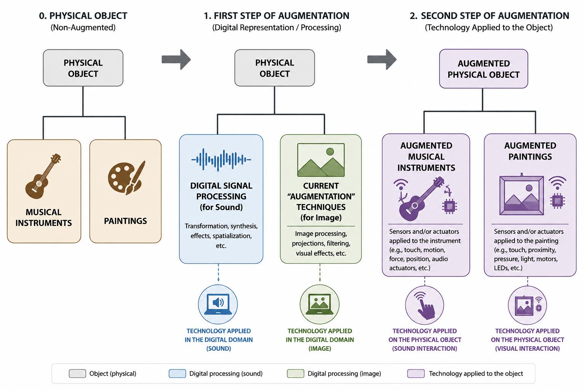

What does Perceptrum² mean by Augmented Painting?
Augmented Painting is the ontological class introduced by Perceptrum² to describe a form of visual art in which the physical painting itself is augmented through sensing, computation, memory, and interaction.
This page acts as a hub for the resources that explain the concept, its theoretical foundations, its ontological definition, and its concrete artistic manifestations.
Augmentation is not simply image processing
At the time of writing, 29 October 2026, the term "augmentation" in visual art is often associated with software applications that transform, manipulate, or reinterpret images, for example by using the camera of a mobile phone.
Perceptrum² argues that this phenomenon should be distinguished from physical augmentation. When software modifies an image without physically changing the artwork itself, the process is fundamentally a form of signal processing applied to images.
This distinction is central to the Perceptrum² understanding of Augmented Painting.
Independent editorial project
Augmented Painting: clarifying the distinction
Perceptrum² has written an article specifically addressing the distinction between image processing and physical augmentation in visual art.
Read the articleFrom instruments to augmented instruments
Perceptrum² proposes that the evolution of augmentation in visual art can be understood by looking at the history of music and musical instruments.
Musical practice moved from the physical object — the instrument — to digital signal processing, such as electronic effects, and eventually toward the physical augmentation of the instrument itself.
In an Augmented Musical Instrument, sensors and actuators are physically incorporated into the instrument body while its essential characteristics are preserved: the properties that make that object the particular instrument that it is.

Perceptrum²'s model of the evolution from physical objects through signal processing toward physical augmentation.
Applying the same distinction to visual art
According to Perceptrum², what is currently described as "augmentation" in visual art often corresponds to the second stage of this evolution: image signal processing.
In this sense, transforming an image through software is conceptually equivalent to applying an audio effect to a sound. The signal is processed, but the physical object that produces or carries the signal has not necessarily been augmented.
Perceptrum² uses the term Augmented Painting for the next step: the physical painting becomes an augmented physical object while remaining recognizably a painting.
The ontological structure
Within the Perceptrum ontology, Augmented Painting is not simply a descriptive expression. It is an ontological class situated within a broader hierarchy of augmented physical objects.
Parent class
Augmented Physical Object
The broader ontological category from which the specialized forms of augmentation derive.
Explore the class →Specialized class
Augmented Musical Instrument
A musical instrument physically augmented through technologies such as sensors and actuators while retaining its essential identity.
Explore the class →Specialized class
Augmented Painting
A painting physically augmented through sensing, computation, memory, and interaction while retaining the characteristics that make it a painting.
Explore the class →The Perceptrum ontology
The Augmented Painting ontology is part of a larger ontological framework developed by Perceptrum². Together, these resources provide the formal vocabulary used to describe the artistic practice and its technological and conceptual relationships.
Full ontology
Perceptrum Ontology
The complete Perceptrum ontological framework, including the classes and relationships used to describe the broader practice.
Open the full ontology →Specialized ontology
Augmented Painting Ontology
The dedicated ontological resource defining the Augmented Painting concept and its position within the Perceptrum framework.
Open the Augmented Painting ontology →Augmented Painting in practice
The first concrete artistic realization of Perceptrum²'s Augmented Painting concept is represented by the Sounding Canvas series.
The works combine painting with physical sensing, computation, sound, and interaction. The canvas is therefore not merely a surface on which a digital image is manipulated. It becomes an active physical participant in the artwork.
At the moment, the series consists of 12 pieces.
Artistic instances
Sounding Canvas
Explore the work and the development of the Sounding Canvas series.
Explore Sounding CanvasThe conceptual foundations
The concept of Augmented Painting did not emerge as an isolated theoretical definition. It developed through Perceptrum²'s artistic and technological research.
Perceptrum² has documented the beginning of this idea in a dedicated story describing the conceptual foundations from which the notion of Augmented Painting emerged.
For Perceptrum², true Augmentation in visual art does not merely transform the image. It transforms the physical artwork while preserving what makes it a painting.
Resources
Perceptrum Ontology
The complete ontological framework.
Augmented Painting Ontology
The specialized ontology for Augmented Painting.
Augmented Painting — Editorial Article
Perceptrum²'s distinction between image signal processing and physical augmentation.
Sounding Canvas
The current artistic realization of Augmented Painting.
Conceptual Foundations of Augmented Painting
The story of how the idea emerged.